李睿祺，本科毕业于上海大学，于2020年开始在上海大学计算机工程与科学学院攻读学术型硕士研究生。李睿祺同学自本科大四开始进入韩越兴研究组学习研究材料图像处理相关技术与应用，在韩老师的悉心指导下，延续并推进了以下研究：
|
1. 菊池带花样的自动化检测。晶体的结构和取向信息可以通过分析EBSD（电子背散射衍射）花样来获取，这些图案是通过EBSD设备获得的。所得信息的可靠性和准确性取决于EBSD花样条带和交点的定位。在这项研究中，提出了一种方法结合Radon变换和累计概率概率霍夫变换实现自动获得EBSD花样（菊池带）和交点的位置。实验结果表明，该方法是鲁棒的，并可以检测出更多准确的菊池带和交点。。
2. 为了解决材料图像分割任务中标注代价与分割精度二者之间的平衡问题，实时获得分割模型，设计了基于交互式划线标注与机器学习的材料图像分割算法。该方法以实时获取分割模型为首要目标，提取材料图像的中心点邻域特征并进行多轮交互式划线标注，采用增量学习方法训练得到最终的图像分割模型。
3. 为了实现根据有限且易获取的标注数据，获得高精度的分割模型，设计了基于伪标签的弱监督深度学习材料图像分割方法。该方法以基于有限标注数据获取最佳分割结果为目标，设计了新的双分支网络结构，提出新的上下文特征差异监督损失用于生成伪标签，使得模型可以仅根据划线标注的训练图像获得较高的分割准确率。本方法解决了深度学习神经网络在材料图像分割任务中面临的小样本问题、标注困难问题和测试过程中的资源浪费问题。
4. 由于相变的快速性和板条马氏体的复杂形态，基于马氏体图像的传统研究难以提供相变过程中的足够信息数据。本研究提出了一种新的视频处理方法，用于提取并分析板条马氏体转变视频中的信息数据。图像数据分析提供了板条马氏体相变的以下动态信息，包括转化的数量、最大长度、最大宽度、平均长度、平均宽度、面积和类别朝向。该研究打破了基于静态图像研究马氏体的局限性，充分描述了马氏体动态转变的各种数据和信息。
毕业后李睿祺同学进入联影智能从事软件开发相关工作。李睿祺同学在上海大学三年的研究生生涯中努力学习，不断增强自己的专业知识和研究汇报能力，有幸结识了许多良师益友。希望李睿祺同学在未来的道路上不忘初心，牢记使命，披荆斩棘，砥砺前行。
|
| 2023年5月8日 |
团队近期成果--基于图注意力的材料图像分割 |
我们团队在国际期刊《Materials Today Communications》（IF：3.662）上在线发表论文“Material Structure Segmentation Method Based on Graph Attention”。该论文上海大学计算机工程与科学学院为第一单位，陈侨川老师为第一作者，魏惠姗为第二作者，韩越兴副教授为通讯作者。
|
随着多学科的发展和融合，计算机视觉与材料科学的融合极大地改变了原有的材料研究方法。现有的方法可以有效地分割特定场景的图像，但没有通用的方法来精确地分割和分析材料的图像。为了解决材料图像中纹理复杂、边界模糊和对比度低的问题，我们提出了一种依赖于多维特征融合的方法，以有限且可用的注释样本更有效地训练网络。该体系结构由编码器、图注意力模块、多尺度特征融合模块和解码器组成。我们展示了这样一个网络可以从图像中进行端到端的训练。在电子显微镜图像中，分割结果优于以往许多先进的方法。使用这种方法，我们可以准确识别材料图像中的多个结构，这为材料图像的多阶段分割和寻找材料科学中结构转换的新机制提供了重要的见解。
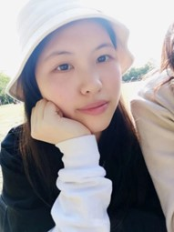
魏惠姗
|
论文链接：Material structure segmentation method based on graph attention
|
上海大学三位已经毕业了的研究生魏惠姗、张宏坤、杨珅于3月18日重返母校，重温了他们曾经的校园生活，并与曾经的导师韩越兴老师交流了许多。在这次回校之旅中，他们分享了他们在工作和生活中的经历和感受，并表达了他们对母校的深厚感情和热爱。 几位同学回到学校，不禁感慨万千。回到这里，让大家有一种回家的感觉，这个校园见证了他们的成长和变化，这里的一切都让他们充满感激和珍惜。
在与曾经的导师韩老师的交流中，三位研究生分享了他们在工作和生活中的一些经历和感受。他们认为，大学时期的学习和生活让他们更加自信和独立，为他们的职业生涯奠定了坚实的基础。同时，他们也表达了对导师的感激和敬意，认为导师的指导和帮助对他们的成长和发展有着不可替代的作用。
这次回校之旅让三位研究生重新感受到了母校的魅力和使命，也让他们更加珍视和关注母校的发展和进步。他们表示，无论身在何处，他们都会时刻关注和支持母校的发展和进步，为学校和社会做出自己的贡献。
|
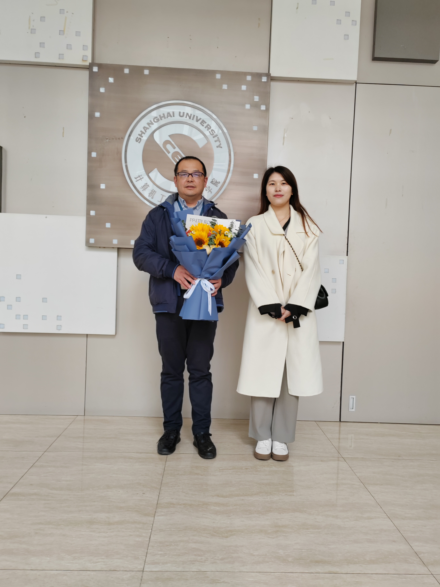
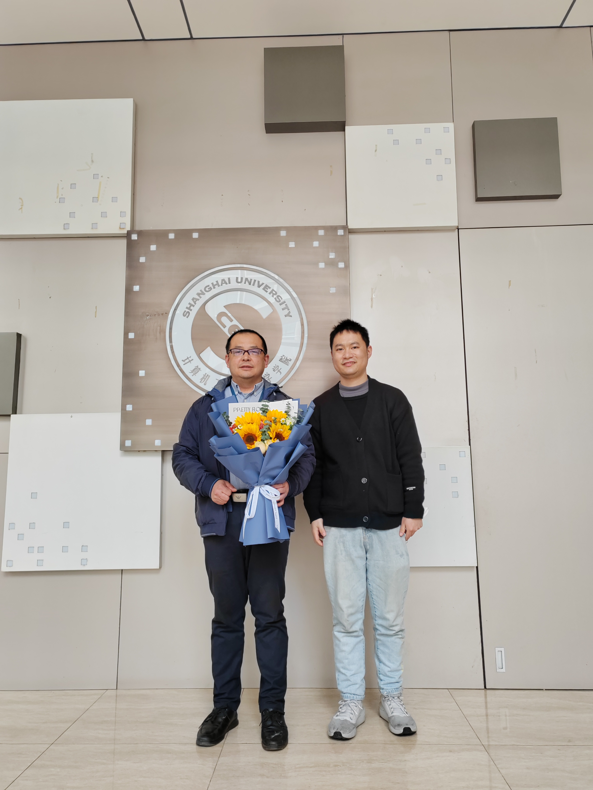
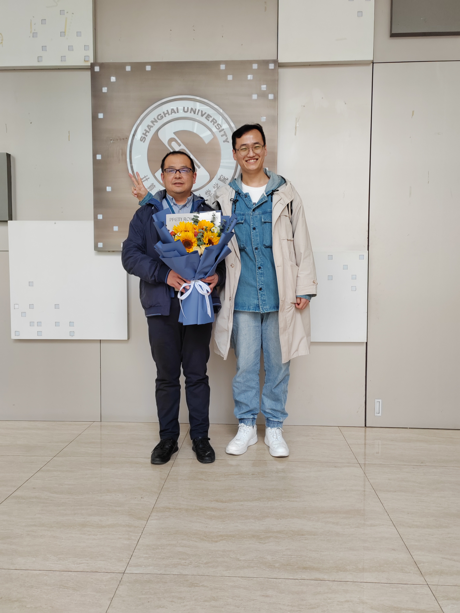
魏惠姗
杨珅
张宏坤
2022年11月25日，为响应国家和学校防疫政策，韩越兴副教授课题组2022年度聚餐暨新生欢迎会选择在计算机学院大楼402举行，参加人员包括韩越兴老师，张瑞老师，陈侨川老师。期间韩老师向张老师介绍了组内的新老成员并号召大家在学习科研之余积极组织体育活动，既强身健体又促进组内氛围；陈老师为大家分享了当年学生时代的趣事；张老师为大家分享了自己幸福的家庭生活。聚餐途中各位同学以年级为单位选择自己爱听的歌曲进行分享演唱，包括脍炙人口的老歌和风靡现今的热歌。最后聚餐在一片欢声笑语中落下了帷幕。
|

|
| 2022.09.18 |
欢迎2022届新生胡干、王慧、张一琳、赵宸、阮礼恒、包胜奇、凌晨帆入组！ |
| 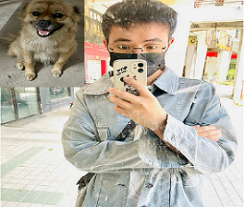 |
胡干，男，本科与硕士均就读于安徽理工大学计算机相关专业，现在是上海大学计算机学院2022级博士研究生。性格较为内向，话不多，熟了之后也会很沙雕~ 爱好是乒乓球与跑步~平常有空会跟朋友一起玩玩大乱斗（不过因为没钱买皮肤，经常因为使用换肤器被封）~ 希望在上大这个新的平台有新的收获，认识更多有趣的人，不断的提升自己~最后，顺利毕业！！！ |
| 王慧，本科就读于延边大学工学院计算机科学与技术专业，现于上海大学计算机科学与技术专业就读硕士。性格开朗大方、热爱生活、乐于反思和总结。空闲时喜欢放空自己，自由安排闲暇时光。进入上海大学读研后希望能在研究生生活中提升自己的专业能力，不断成长，一步一个脚印走好自己的每步路。 |
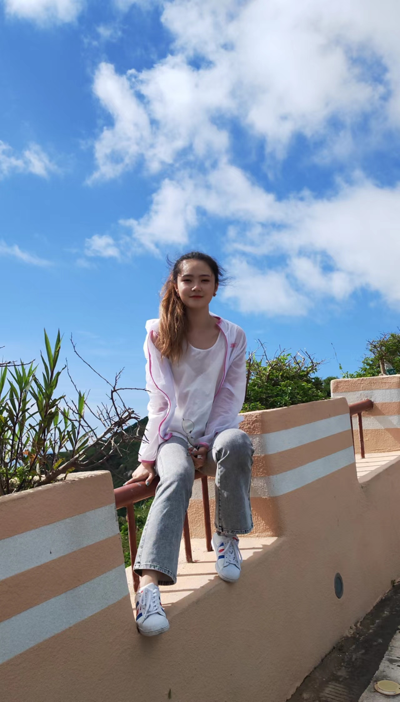 |
| 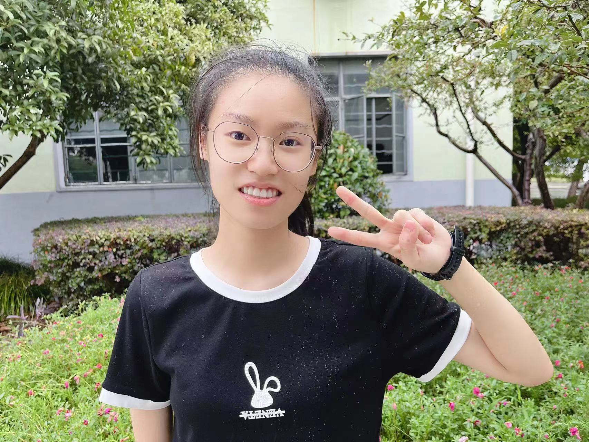 |
张一琳，女，本科就读于黑龙江科技大学计算机与信息工程学院软件工程专业，现在是上海大学电子信息硕士研究生。性格开朗，积极乐观，待人真诚，有责任心。业余时间喜欢看书、听音乐、看电影等。希望在这段新的旅程里，可以努力成为更好的自己。 |
| 赵宸，男，本科就读于南京林业大学软件工程（嵌入式培养）专业，现在是上海大学电子信息专业硕士研究生。性格外向，善于沟通交流，有一定的组织能力。对于事情有一种不服输的精神，觉得困难都会被攻克，只要愿意花费时间精力。平时生活中也不是一个沉闷的人，喜欢在户外散心换换心情，会让生活有不一样的体验。关于兴趣爱好，喜欢看电影，听音乐，旅游。研究生生活是新的征程，我对未来充满希望，也希望与大家一路同行。 |
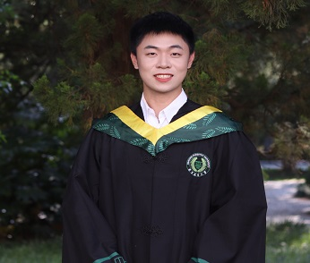 |
| 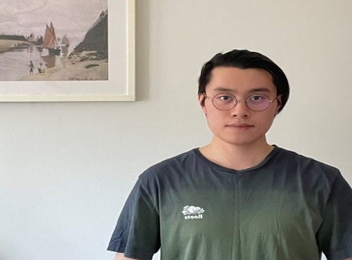 |
阮礼恒，本科就读于上海大学计算机学院计算机科学与技术系，毕业后继续在计算机学院计算机科学与技术专业攻读硕士研究生，师从韩越兴老师。喜欢看书、看电影，会下围棋，早上和下午喜欢能有一杯好喝的咖啡。余生不过两万天，希望能在这每一天过的快乐，不断挑战并提升自我。 |
| 包胜奇同学本科毕业于上海大学计算机科学与技术专业，现在继续在上海大学计算机学院进行研究生阶段的学习。他为人和善，性格开朗，善于与人沟通，敢于面对各种挑战，有较强的自我管理能力。希望在新的人生阶段中，持续学习，收获知识，不断向前迈进。 |
 |
| 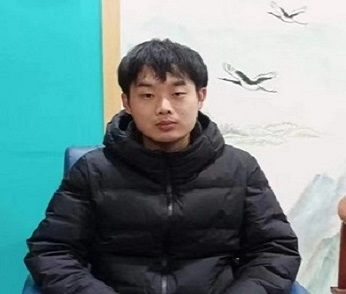 |
凌晨帆，男，本科毕业于武汉生物工程学院计算机科学与技术专业，现在是上海大学计算机科学与技术专业硕士生。性格开朗活泼、热爱生活，在业余时间喜欢打游戏，跑步，面对问题敢于思考，不轻易放弃。进入上海大学读研后希望能够培养良好的学术素养，提高专业能力，也希望能和大家相处融洽，一起进步！ |
魏惠姗，本科毕业于安徽理工大学，2019年来到上海大学计算机工程与科学学院攻读学术型硕士研究生，师从韩越兴老师，主要研究方向为材料图像分割。在韩老师三年的指导下，完成以下研究：
|
1. 针对材料图像的小样本和纹理复杂问题，提出了基于图卷积与深度学习的材料图像分割方法。该方法利用残差连接和多尺度融合模块丰富特征图的信息，利用基于图卷积的双重注意力机制增加关键特征的关注，添加反卷积部分的卷积层提高网络的非线性表达能力。
2. 针对小样本数据集上卷积层过多容易丢失特征的问题，以 UNet 为骨干网络设计了一种基于跳跃连接的图注意力模块。该方法结合了卷积神经网络的思想将图卷积和图注意力层连接起来，致力从图结构的角度融合多种维度的节点特征，在加深加深网络深度的同时，减少像素级信息和空间信息的损失，以达到提高网络分割性能的目的。
3. 实现了图卷积技术跨领域应用于语义分割任务，提出了将特征图转换为图结构的图编码器和图解码器，使卷积过程中的特征图可以结合自身维度转变为相应节点数的图结构，有利于促进图卷积神经网络应用于语义分割任务中。
毕业后魏惠姗同学进入上汽集团零束软件分公司工作。三年的研究生生活让自己开拓了眼界，接触到了极具魅力的计算机视觉领域，见识了深度学习在各个专业尤其是图像处理方面的应用，结识了许多良师益友。希望在未来不断进步，不负此行。
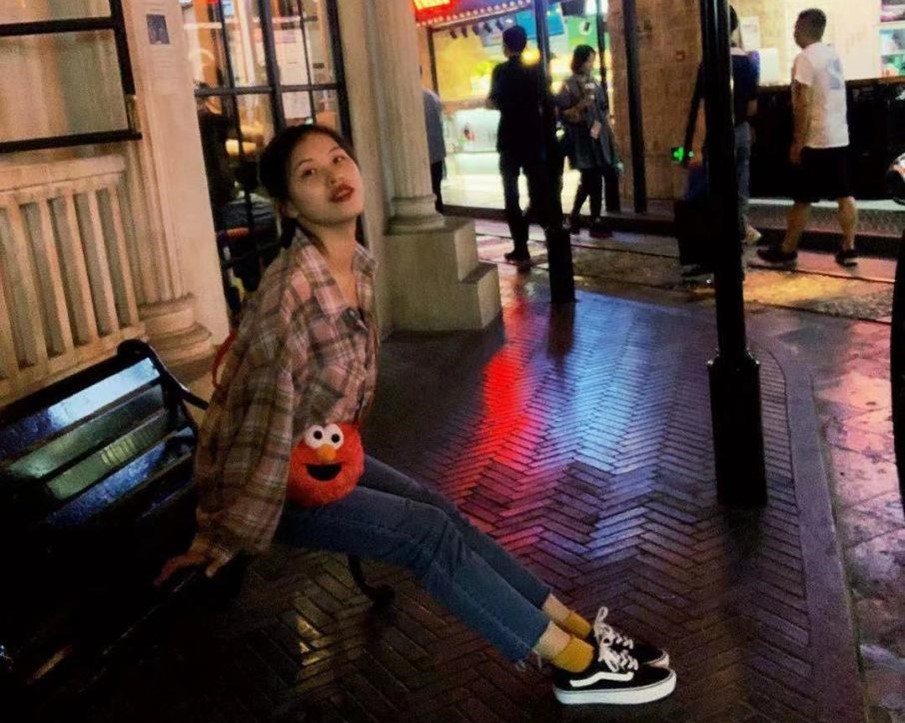
论文链接：基于图卷积神经网络的材料图像分割研究
|
| 2022年7月30日 |
团队近期成果--基于机器学习的材料图像分割中心环境特征模型 |
我们团队在国际期刊《Scientific Report》（IF：4.996）上在线发表论文“Center-environment feature models for materials image segmentation based on machine learning”。该论文上海大学计算机工程与科学学院为第一单位，韩越兴副教授为第一作者及通讯作者。此工作还得到了陈侨川老师、王冰老师和刘轶老师的大力支持，李睿祺、杨珅做了大量工作。
|
材料的性能不仅取决于它们的成分，而且还取决于它们在各种加工条件下的微观结构。到目前为止，对复杂的微观结构图像的分析主要依靠人类的经验，缺乏自动定量的表征方法。机器学习提供了一个新兴的重要工具，以智能方式识别各种复杂的材料相。在这项工作中，我们提出了一个 "中心环境分割"（CES）特征模型，用于图像分割，该模型基于机器学习方法使用环境特征和领域知识的标注进行分割。CES模型引入了邻域信息作为给定像素的特征，反映了所研究的像素和其周围环境之间的关系。然后，采用迭代的集成机器学习方法来训练和纠正图像分割模型。CES模型被成功地应用于包括钢铁、木材等七种具有复杂纹理的不同材料图像的分割。在对钢铁图像进行分割的研究中，CES方法在确定边界轮廓方面的总体表现优于许多传统方法。这项工作表明，领域知识和环境特征的迭代引入可以提高对各种复杂材料微结构图像分割的准确性。
 李睿琪
杨珅
李睿琪
杨珅
|
论文链接：Center-environment feature models for materials image segmentation based on machine learning
|
张宏坤，本科毕业于内蒙古农业大学，于2019年来到上海大学计算机工程与科学学院攻读学术型硕士研究生，开学之后进入韩越兴研究组进行材料图像处理方面的研究，在韩老师三年的悉心指导下，完成了以下研究：
|
1. 面对不同组织分布不均、重叠交错的复杂材料图像，设计研究了基于复杂网络理论方法对特征信息处理方法。该方法使用复杂网络中的社区结构描述材料中的不同组织，以网络构建过程中的 R 和 T 阈值加速网络拓扑的动态演化过程，提出了 RT-模块度对网络拓扑进行评价，完成图像处理。通过在陶瓷和钢铁等图片上进行分割实验，验证了本方法的有效性。
2. 面对具有多种特征的复杂纹理图片，提出了一套基于传统图像处理技术的特征信息处理方法。该方法利用材料图像的特点，设计了相应的特征信息处理算法，利用提取到的形状特征对纹理特征的处理进行加速，大大降低了处理时间。通过在具有不规整形状和复杂纹理的薄膜图案上进行实验，验证了本方法的有效性。
3. 为了进一步提升处理速度，降低计算资源消耗，设计并提出了基于深度学习的特征信息处理方法。该方法将轻量级网络模型应用于纹理防伪研究中，通过协调注意力机制的引入和损失函数的设计，使得算法识别准确率得到保证。相比于其他利用深度学习进行纹理防伪的研究工作，该方法不仅降低了资源消耗，并且还在大量具有复杂纹理的材料图像数据库上进行了验证，证明了方法的有效性。
毕业后张宏坤同学进入AMD公司从事软件开发相关工作。张宏坤同学在上海大学三年的研究生生涯中努力学习，不断增强自己的专业知识和研究汇报能力，为人热情结识了许多良师益友。希望张宏坤同学在未来的道路上能够不忘初心，牢记使命，披荆斩棘，砥砺前行。
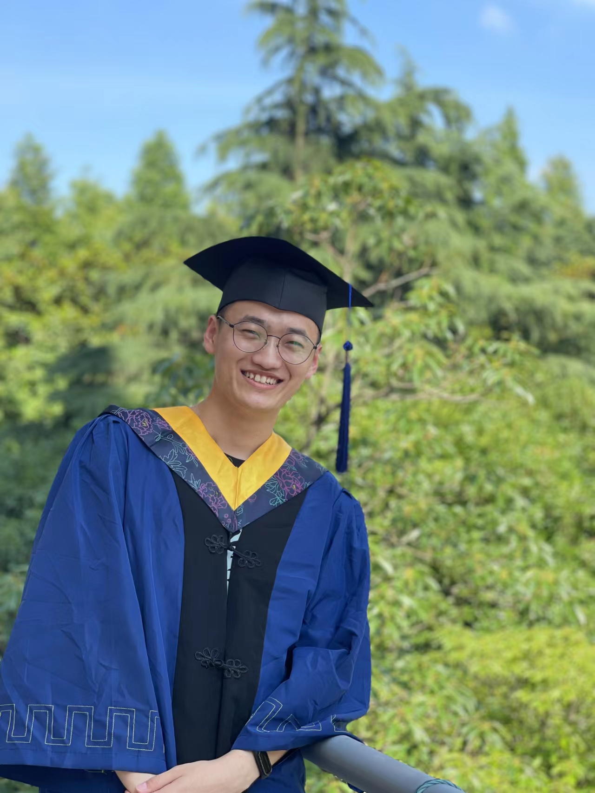
论文链接：面向复杂材料图像的特征信息处理方法研究
|
杨珅，本科毕业于安徽中医药大学，2019级计算机应用技术硕士。师从韩越兴老师，主要研究材料图像分割课题。经过三年的努力，杨珅同学提出了面向复杂纹理的材料微观结构分割与识别的分割方法，为解决材料图像中小样本、数据分布不平衡和纹理复杂的纹理做出一些贡献，为材料基因数据库的构建添砖加瓦。毕业后杨珅同学将进入中兴通讯股份有限公司从事无线产品开发工作。此外，杨珅同学课外爱读书和写作，积极参加社团活动，结识一群有趣且优秀老师和同学。三年的研究生生活就像爬山，哭过、笑过、累过，但最终登上顶峰，看到属于自己的那份独特风景，希望在未来的人生中永远热忱，勇敢无畏的奔向前方！
|
研究生期间工作
为了解决材料图像中存在的小样本、数据分布不平衡和纹理复杂的问题，结合多种深度学习技术自动化地分割材料图像中的微观结构，为材料基因数据库的构建提供数据基础。
1. 针对材料图像分割中存在的小样本问题，提出基于深度学习和超像素的材料图像分割方法，抓住材料图像同 相的像素高度相似的特性，利用超像素算法获取矩形块，解决了材料图像的小样本问题提出的改进的 DenseNet 通过施加特征增强模块保留纹理特征，去除冗余特征的干扰，设计的过渡层上采样方法，较好的恢复特征图信息。
2. 针对材料图像中数据分布不平衡的问题，使用并改进两种损失函数，针对分类任务中数据分布不平衡问题，基于 Focal 损失提出 Precison Foca 损 失，将置信度替换为精度，更准确的反映样本分类的难度，并反馈给网络，优化训练过程；针对分割任务中的数据分布不平衡的问题，基于 Dice 损失提出 CE-Dice 损失，CE-Dice 损失结合交叉熵损失和 Dice 损失，训练过程更平滑，优化分割结果。
3. 实现了具有复杂纹理的材料图像的精确分割，第三章提出的改进的DenseNe,保留关键纹理特征，去除冗余特征对矩形块识别的干扰；第四章提出改进的 FCN，实现纹理相似的材料图像精确分割，级联的特征融合模块融合高层与低层语义特征，多尺度学习模块深度挖掘细粒度信息和全局上下文信息，采用注意力机制模块关注重要的特征图，优化资源配置，三种模块互为补充。
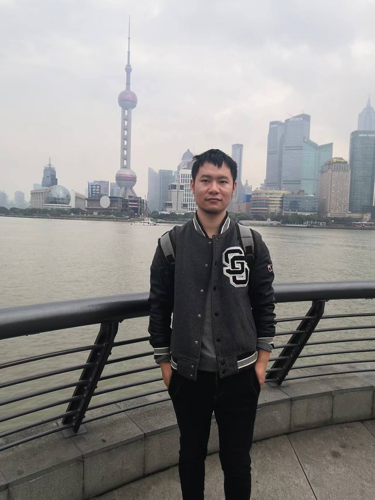
论文链接：面向复杂纹理的材料微观结构分割与识别方法研究
|
| 2022.06.18 |
欢迎2022届本科生顺利毕业！ |
| 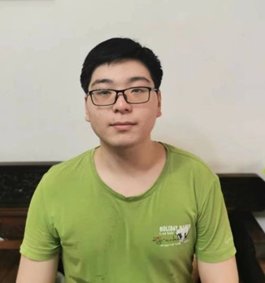 |
王驭涛同学性格活泼开朗，思维活跃，具有很好的亲和力，善于与人沟通交流，而且面对困难，自强不息，勇于直面，业余爱好书法和旅游。在上海大学学习的四年中，不仅拓宽了知识的广度和深度，也给王驭涛同学留下了很多美好回忆，也希望王驭涛同学砥砺前行，开创辉煌。 |
| 孙家瑞同学充满好奇心，愿意积极了解新知识，并动手实践。通过学院组织的宣讲活动了解到韩老师的研究方向，主动加入到老师的本科生团队，从中收获良多，对日后的学习工作都有着长久的帮助。 |
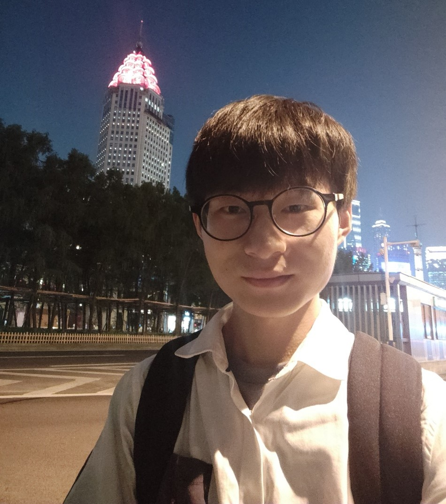 |
|
阮礼恒同学待人友善，稳重沉着，遇到困难时敢于克服。业余时间里喜欢游泳，爱好咖啡，乐于阅读。他将继续在上海大学计算机科学与技术专业攻读硕士研究生，师从韩越兴老师，希望阮礼恒同学在接下来的研究生生活中百尺竿头更进一步。 |
| 陈思文，女，本科就读于上海大学计算机科学与技术专业。在毕业设计期间，得到了韩越兴老师的许多帮助，和材料学院合作进行软件开发。我在团队中，能够积极配合团队成员，进行及时有效的沟通，有团队精神；在项目中，思维清晰，抗压能力较强，愿意学习新事物，注重理论和实践的结合；在生活中，有责任心与自我管理意识，待人真诚。关于兴趣爱好，我喜欢看电影、打游戏、拼模型。大学四年，虽然突如其来的疫情让我将近一半的校园生活在家中度过，但我依旧很珍惜大学时光。在本科期间的校园生活中，不仅收获了知识，还与同学们结下了深厚的情谊。在最后的毕业设计期间，能够加入韩老师的小组，在韩老师和材料学院的帮助下，进行自我学习和提升，让我感到十分荣幸。 |
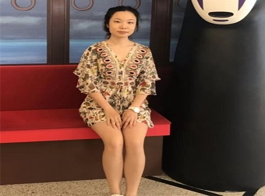 |
 |
孙懿祺同学做事认真负责，兴趣爱好广泛，喜爱阅读和音乐剧。在上海大学四年的学习生涯中，不仅获得了许多专业方面的知识，还积极参与学生组织活动，收获了许多挚友。希望孙懿祺同学能在未来能够继续努力，不断提升自己的专业素养，超越自我！ |
| 2022年6月7日 |
团队近期成果--应用于材料图像分割的UNet |
我们团队在中文核心期刊《计算机应用研究》上在线发表论文“应用于材料图像分割的UNet”。该论文上海大学计算机工程与科学学院为第一单位，魏惠姗为第一作者，韩越兴副教授为通讯作者。此工作还得到了组内陈侨川老师等的指导。
|
| 2022年6月 |
团队近期成果--基于轻量级网络的防伪标签检测算法 |
我们团队在核心期刊《上海大学学报（自然科学版）》上发表论文“基于轻量级网络的防伪标签检测算法”。该论文以上海大学计算机工程与科学学院为第一单位，硕士生张宏坤为第一作者，韩越兴老师为通讯作者，此工作还得到了陈侨川老师、巫金波老师的大力支持。
|
|
近年来，伪造盗版产品带来的经济损失逐年增加，伪造技术不断提升，防伪检测问题受到了研究人员的广泛关注。为了解决现有防伪检测方法的计算量大，资源占用高，检测耗时较长等问题，本工作提出了一种基于轻量级网络的防伪标签识别检测模型。模型采用更为轻量的卷积神经网络（convolutional neural networks, CNN）来进行形状和纹理识别。在形状识别任务中降低池化层大小以增强模型学习能力，在纹理分类任务中使用协调注意力（coordinate attention, CA）模块增强模型的对单一特征图的信息获取，通过设计损失函数增强模型对真伪样本识别能力，最后通过特征向量最大值得到预测结果。实验结果表明，所提方法整体识别检测准确率可达到95.67%，检测时间相较于传统方法有明显提升。
|
| 2022年5月29日 |
团队近期成果--人脸遮挡场景中的表情识别：一种路径选择多网络 |
我们团队在国际期刊《Displays》（IF：2.167）上在线发表论文“Facial Expression Recognition in Facial Occlusion Scenarios: A Path Selection Multinetwork”。该论文上海大学计算机工程与科学学院为第一单位，阮礼恒为第一作者，韩越兴副教授为第二作者和通讯作者。
|
在疫情仍然持续的今天，佩戴口罩出行已成为一种常态，口罩会遮挡面部五官中的鼻子和嘴部。此外，常见的面部遮挡场景包括戴墨镜、戴帽子、物体阴影等。面部的遮挡为表情识别带来一定困难。本文基于三种常见的面部遮挡场景，即上半面部、下半面部和眼部遮挡，提出了一种路径选择式的多网络结构。该方法包含两个部分：第一部分是多网络结构，本文将原数据集以标签为单位分为三份，称为子数据集，每个子数据集继承原数据集中的部分标签，由子数据集分别训练三个子网络；第二部分是一种路径选择式的多网络集成方法，将子数据集中各自包含的图像视为同一标签，放入新的数据集中，用于训练初始网络，根据初始网络所输出的预测结果选择子网络的其中之一输出最终预测结果。本文将Fer2013、Jaffe、KDEF和RAF-DB四个常用的公开表情数据集合并为一个更大的数据集，增加训练样本数量，进行模拟遮挡处理。实验结果表明，本文方法可以有效识别出有遮挡的面部表情，并且适用于大多数可能存在的面部遮挡场景，这使得表情识别的可以更准确、可靠地应用于更多场景。
论文链接：https://doi.org/10.1016/j.displa.2022.102245
项目链接：https://github.com/han-yuexing/A-Path-Selection-Multinetwork
|
| 2022年5月 |
团队近期成果--基于数字图像处理技术的热障涂层形貌特征识别方法 |
我们团队在核心期刊《上海大学学报（自然科学版）》上发表论文“基于数字图像处理技术的热障涂层形貌特征识别方法”。该论文以上海大学计算机工程与科学学院为第一单位，硕士生刘宇虹为第一作者，韩越兴老师为通讯作者，此工作还得到了曾毅老师、汪语嫣的大力支持。
|
针对人工检测热障涂层形貌特征所具有的繁复性、误差大等缺点, 提出一种利用机器视觉自动化识别热障涂层形貌特征并计算形貌特征参数的方法。完成了基于数学形态学的片层轮廓自动提取及铺展形貌参数的计算, 用最大类间方差法求取二值分割阈值, 运用均值滤波和形态学操作为图片去噪并保证单个片层的连通性, 通过轮廓提取来获得片层边缘信息, 最后根据所提取出的轮廓计算片层的实度参数。 同时, 进一步完成了基于遍历搜索的热障涂层中裂纹的自动识别及长度计算。首先, 识别出图像中的片层并去除, 运用闭运算完成断裂裂纹的修复, 通过图像细化得到裂纹骨架; 然后, 遍历搜索每条裂纹, 完成长度计算。结果表明, 采用所提出方法检测片层轮廓和识别裂纹的效果良好, 具有较好的抗噪声干扰能力, 可以精确计算出形貌特征参数, 对研究热喷涂熔滴在基材表面的沉积行为有重要的推动作用。
论文链接：https://www.journal.shu.edu.cn/CN/10.12066/j.issn.1007-2861.2371
|
| 2022.3.28 |
团队近期成果--基于超像素算法和深度学习的复杂纹理图像识别与分割 |
我们团队在国际期刊《Computational Materials Science》（IF：3.3000）上在线发表论文“Recognition and segmentation of complex texture images based on superpixel algorithm and deep learning”。该论文上海大学计算机工程与科学学院为第一单位，韩越兴副教授为第一作者，组内陈侨川老师为通讯作者，杨珅做了大量工作。
|

|
| 2022.2.07 |
团队近期成果--基于Radon变换和累计概率霍夫变换的菊池带自动检测方法 |
我们团队在国际期刊《Journal of Microscopy》(IF:1.758,中科院4区)上在线发表论文“Automatic detection of Kikuchi bands based on Radon transform and PPHT”。该论文上海大学计算机工程与科学学院为第一单位，韩越兴副教授为第一作者和通讯作者，李睿祺、曾毅、刘梦炀做了大量的工作。
|
晶体的结构和取向信息可以通过分析EBSD（电子背散射衍射）花样来获取，这些图案是通过EBSD设备获得的。所得信息的可靠性和准确性取决于EBSD花样条带和交点的定位。在这项研究中，我们提出了一种方法来自动获得EBSD花样（菊池带）和交点的位置。该方法使用Radon变换和累计概率概率霍夫变换来分别检测菊池带边缘的直线和线段。然后，菊池带可以用线段的端点拟合双曲线获得。这些结果可以量化地描述菊池带的信息。实验结果表明，该方法是鲁棒的，并可以检测出更多准确的菊池带和交点。
论文链接：http://dx.doi.org/10.1111/jmi.13079
|
2021年12月24日，韩越兴副教授课题组2021年度年终聚餐在沪上锦观楼举行。期间老师给大家讲述当年求学经历，为我们今后发展建言献策，已经毕业归来的李小龙师哥给大家分享工作经验。最后聚餐在大家的相互祝福种结束。
|
| 2021年12月14-16日 |
第五届材料基因工程高层论坛 |
2021年12月14-16日，在河南郑州举办了“第五届材料基因工程高层论坛”。韩越兴老师于16日下午，作了“基于计算机视觉的材料图像处理方法”的报告，描述了材料图像数据提取的几个方法。材料数据是材料基因组计划中的物质基础，可以帮助构建各种材料研究相关的数据库，更是帮助人工智能理解“微观结构”、“制造工艺”和“宏观性能”关系的关键。材料数据主要包含计算数据、实验数据、生产数据、文献数据，这些数据中经常包含了大量的图像，从这些图像中提取关键信息，是材料图像处理的主要目的。
报告的内容主要描述了通过计算机视觉方法，包括机器学习和深度学习方法对复杂材料图像中的各种元素进行提取和挖掘。这里举的三个例子，分别是分子机器人的DNA大分子材料图像识别，菊池花样的分割设识别，以及基于超像素和改进的DenseNet方法的材料图像分割。
另外，韩越兴老师16日下午同时主持了分会场的学术会议。
|
李小龙，本科毕业于福建工程学院，于2018年考入上海大学计算机学院。在开学之后便加入韩越兴图像研究组研究计算机视觉相关的内容，而后在韩老师的悉心指导下选择了医学图像分割的课题。经过三年的努力，李小龙同学基于深度学习等多种技术实现了肝脏与肿瘤CT图像的自动化分割，为了智能医疗的发展添砖加瓦。毕业后李小龙同学进入联影医疗有限公司继续从事医疗相关的工作。此外，李小龙同学在课外广泛阅读经史文学，同时热爱体育锻炼，结识了许多良师益友。在上海大学的三年研究生生活中，李小龙同学成长巨大，希望在未来的道路上，能够保持劲头，不断进步，不断突破
|
研究生期间工作
为了帮助医生对肿瘤患者的病情做出更全面的评估和规划，结合多种深度学习技术自动化地分割CT图像中的肝脏与肿瘤，为临床治疗提供定量定性诊断的数据基础。
1. 针对FCN、U-Net等深度学习方法由于网络维度的限制，难以探索三维CT图像中的空间特征信息，提出了一种基于边界损失函数的2.5D全卷积网络，能够在减少网络参数量和计算资源消耗的同时，有效地探索 CT 图像中的空间特征信息，提升肝脏与肝肿瘤分割准确度。
2. 针对医学图像的特点和常见的损失函数缺少优化网络探索边界特征能力的问题，设计了一种新的边界损失函数，融合了图像轮廓的距离、面积和边界信息，能够有效地优化深度学习网络，探索更多的图像边界和轮廓特征。
3. 针对编码解码网络存在忽视局部特征之间相关性和依赖性的问题，将 2D、2.5D、
3D 网络与注意力机制整合起来，提出了一种基于双路注意力的编解码网络分割框架，该框架融合了双路自注意力机制模块、密集网络块、残差网络块和双路径网络块，包含九种不同的网络结构，能够有效地完成肝脏与肿瘤 CT图像的自动化分割任务。
论文链接：基于多维度编解码网络的
肝脏与肿瘤分割方法研究
|
| 2021.12.03 |
团队近期成果--基于迁移学习的重叠纳米物体识别方法 |
我们团队在国际期刊《Neural Computing and Application》(IF:5.606,中科院2区)上在线发表论文”A novel transfer learning for recognition of overlapping nano object ”。该论文上海大学计算机工程与科学学院为第一单位，韩越兴副教授为第一作者和通讯作者，硕士生刘宇虹，宋磊磊，童麟做了大量的工作。
|
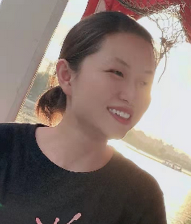

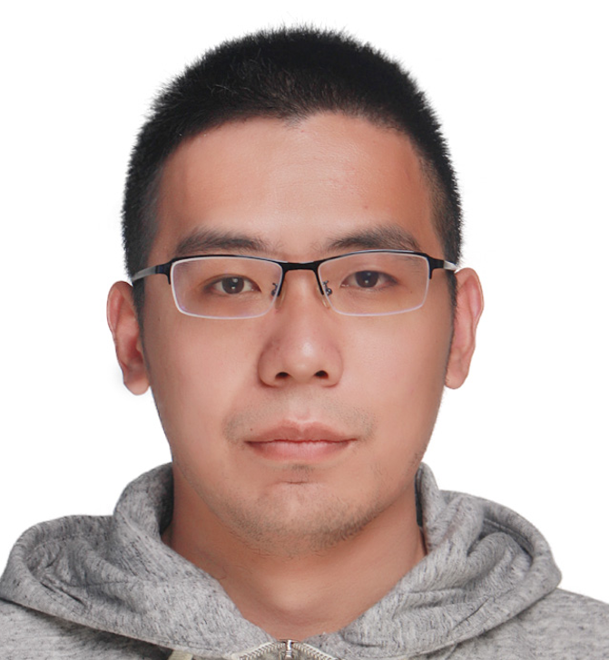
刘宇虹
宋磊磊
童麟
尽管纳米结构科学和技术在许多领域得到了快速发展，但由于成本高，仍然难以获得足够的纳米物体样本，从而阻碍了材料领域深度学习方法的发展。我们设计了一种新的方法来识别原子力显微镜（AFM）图像中的纳米物体。首先，使用一种基于LOG的图像去噪方法对图像进行预处理；然后，基于分水岭算法提出了两种改进的分割重叠目标的方法；最后，建立了一个基于迁移学习的CNN识别模型，通过对大规模手写数字和字母形状进行预训练来获取表现优异的模型，从而识别AFM图像中的纳米物体。本研究提出的方法可以有效地解决AFM图像中小样本纳米物体识别困难的问题。
论文链接：https://doi.org/10.1007/s00521-021-06731-y
|
| 2021.10.01 |
团队近期成果--基于平行卷积神经网络的EEG运动形象信号处理 |
我们团队和上大机自学院李龙副教授团队在国际期刊《Biomedical Signal Processing and Control》（IF:2.954，中科院2区）上在线发表论文“A classification method for EEG motor imagery signals based on parallel convolutional neural network. ” 该期刊在JCR及中科院SCI期刊分区为二区。该论文上海大学计算机学院为第一单位，韩越兴副教授为第一作者和通讯作者。
|
深度学习已在目前的研究中广泛成功地应用于不同类型的分类图像。然而，迄今为止，深度学习方法在脑电图(EEG)运动中的应用图像分类非常有限。本研究提出了一种针对脑电图信号的预处理算法表示然后，提出了一种并行卷积神经网络(PCNN)结构来对运动进行分类图像信号。对于原始脑电图信号的表示，创建了一种新形式的图像来结合空间滤波和频带一起提取。通过将所表示的图像输入PCNN，它会进行堆栈三个独特的子模型结合在一起，旨在优化分类的性能。的平均精度该方法在BCI竞争IV数据集2b上达到了83.0±3.4%，优于比较方法方法至少为5.2%。该方法在数据集2b上的平均Kappa值达到0.659±0.067，与所比较的算法相比，至少有20.5%的改进。结果表明该方法在脑电图运动成像信号分类中表现较好。
论文链接：https://doi.org/10.1016/j.bspc.2021.103190
项目链接：https://github.com/han-yuexing/eegmotor
|
| 2021.10.01 |
团队近期成果--高通量下的材料图像分割 |
我们团队和材料基因组工程研究院杨炯教授课题组在国际期刊《Chemistry of Materials》（IF:9.872，中科院1区top）上在线发表论文“Accelerating the Discovery of Cu−Sn−S Thermoelectric Compounds via High-Throughput Synthesis, Characterization, and Machine Learning-Assisted Image Analysis.” 该期刊是工程技术-材料科学等综合研究领域最具影响力的顶级学术期刊之一，在JCR及中科院SCI期刊分区为一区Top。该论文上海大学为第一单位，材料基因组工程研究院博士生盛晔为第一作者，材料基因组工程研究院杨炯教授，奚晋扬教授和计算机工程与科学学院韩越兴副教授为共同通信作者。
|
高通量（HTP）方法已成为加速材料研发的有力方法。在这项工作中，我们展示了机器学习（ML）图像分割方法与 HTP 合成和表征相结合在发现新的热电化合物方面的能力。首先，利用改进的扩散偶 HTP 合成方法获得具有九种不同原材料比率的圆柱状样品。然后，对每个原料配比固定的片段进行扫描电镜表征，拍摄11幅背散射电子图像（共99幅）。为了快速分割出 99 张背散射电子图像中的不同相，我们提出了两种 ML 图像分割策略：应用全连接的神经网络的有监督的主动学习策略和无监督的聚类策略。有监督策略大大降低了图像分割的时间成本，且分类准确率达到了 0.9，该模型被用来对大批量的图像进行了自动的分割。同时，为了进一步减少人工标注的工作量，在训练过程中引入了主动学习。分析第一种策略分出的两个主要的相的 EDS 表征结果，发现了一种新化合物 Cu7Sn3S10，其具有较好的热电性能，zT 超过了 0.6。不同于有监督策略，无监督策略可以在没有人为标注的情况下，进一步在 BSE 图像中寻找在策略一中可能被忽视的化合物。根据无监督策略的结果，发现了未被报道过的化合物Cu1.6S。综上我们的工作我们展示了一个全 HTP 流程的例子，实现了HTP表征和新化合物鉴定的自动化分析。
论文链接：https://doi.org/10.1021/acs.chemmater.1c01856
|
| 2021.09.18 |
欢迎2021届新生韩思凡、陈尊龙、池洳婷、万冠新入组！ |
| 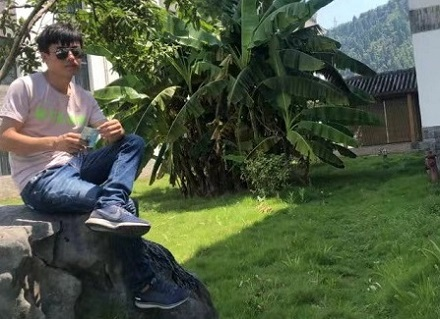 |
韩思凡，本科就读于西北民族大学软件工程专业，现在是上海大学软件工程硕士研究生。我，爱笑，爱乐，爱简单，爱听音乐，爱自由自在，爱安安静静地自由自在也爱疯疯癫癫的热热闹闹。我的历史没有过度光彩夺目的修饰，只有一步一步证明自己的坚定。做过学习委员，懂得为大家学习负责。带团队参加过数学建模获过奖，懂得团队协作的力量。保送过硕士研究生，懂得成功不是随随便便，轻而易举眼高手低。
性格方面我热情随和，活波开朗，具有进取精神和团队精神，有较强的动手能力。良好协调沟通能力，适应力强，反应快、积极、灵活，爱创新！做人真诚热情，乐观向上，工作态度认真负责、谦虚，有较好的时间观念和适应能力，积极参加各种社会实践来充实自己，发挥自己的才能，挖掘自身的潜力。富有团队协作精神，集体观念强。在学习中，我注重理论与实践的结合。
在新的学习环境中，我将继续努力，提升自己的能力，迎接新的挑战，与大家一起进步。 |
| 陈尊龙，本科就读于中国海洋大学信息科学与工程学院电子信息科学与技术专业，现于上海大学计算机科学与技术专业就读硕士。性格开朗、热爱研究、善于沟通。学习研究时十分严谨、注重细节，常常会回头检视自己的知识体系。闲暇时喜欢看视频，逛论坛等。希望能在上海大学的研究生生活中提升自己，与老师、同学们在研究计算机技术的道路上一同进步。 |
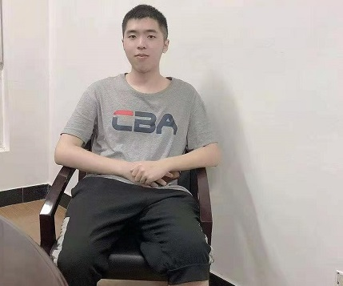 |
| 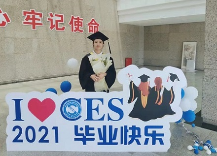 |
池洳婷，女，本科就读于上海大学计算机学院智能科学与技术系，毕业后继续在计算机学院计算机科学与技术专业攻读硕士研究生，师从韩越兴老师。喜欢看推理电影、阅读各种书籍、慢跑、烹饪，性格开朗、积极乐观、善于思考、勇于尝试。希望在新的征途中能够遇见更好的自己。 |
| 万冠新，男，本科就读于桂林理工大学计算机科学与技术专业，现在是上海大学计算机科学与技术硕士研究生。性格方面，我开朗活泼，容易与别人和睦相处，善于沟通，坚强内敛，责任心强，能够正确对待生活及遇到的困难，有较强的环境适应能力，遇事沉稳，自信能很好的完成各项工作。爱好方面，喜欢看书、听音乐、看悬疑影视作品，放松自己；平时也会打羽毛球、乒乓球和跑步，锻炼身体。在生活中，做事认真负责，喜欢定一些小目标激励自己，对待困难，乐观执着，自己的座右铭是成功=艰苦的学习+正确的方法+少说空话。希望能在上海大学这段时光中收获到属于自己的一份成功。 |
 |
| 2020.07.06 |
团队近期成果——张宏坤同学在高水平期刊发表论文 |
我们团队和材料基因组工程研究院巫金波教授课题组在国际期刊《Small》（IF:11.459,中科院1区top）上在线发表论文“Unclonable Micro-Texture with Clonable Micro-Shape towards Rapid, Convenient, and Low-Cost Fluorescent Anti-Counterfeiting Labels”。该期刊是工程技术-材料科学等综合研究领域最具影响力的顶级学术期刊之一，在JCR及中科院SCI期刊分区为一区Top。该论文上海大学为第一单位，计算机工程与科学学院硕士生张宏坤和材料基因组工程研究院硕士生林宇宏、冯静芸为共同第一作者，材料基因组工程研究院巫金波教授和计算机工程与科学学院韩越兴副教授为共同通信作者。此工作还得到了张统一院士、温维佳教授和日本冲绳科学技术研究所(OIST)戚亚冰教授的鼎力支持。
|
从高端奢侈品到医疗用品，假冒伪劣产品不仅造成巨大的经济损失，而且对人们的健康构成巨大威胁。目前广泛使用的防伪标签源于确定性的生产过程，其制备方法简单但很容易被造假者复制。生产具有物理不可克隆功能（Physical Unclonable Function, PUF）的防伪标签是一种可行的解决方案，但传统的PUF识别技术要对数据库中的所有图像一一匹配，制备成本高且识别速度慢。
为解决上述问题，该研究团队通过平行非连续去润湿技术高通量制备了一种具有四层防伪能力的标签：钙钛矿晶膜的荧光为第一层防伪；由基本单元组成的宏观图形可以携带信息，如二维码，作为第二层防伪；形状各异的微观基本单元为第三层防伪；由于自组装随机过程形成的不可复制纹理为第四层防伪。
我们主要的工作是设计和建立了存有真实薄膜图案的数据库，其中包含形状数据库和纹理数据库。利用CNL（control the number of landmarks）方法，改进的霍夫变换方法以及形状空间理论来完成形状上的识别；然后利用GMS（Grid-based Motion Statistics）方法进一步识别标签的纹理。
在实际应用中，通过手机以及便携式显微镜获取防伪微图案并传入识别软件进行匹配识别，将纳米晶体膜的多种轮廓形状进行细化分类，作为图像数据识别的“分类符”，基于这种“分而治之”策略的识别技术，验证时间可减少20倍以上。结合高通量材料制备技术和数据驱动的材料应用，实现了低试剂成本（2.1 × 10−4 USD）、认证简便快速（总时间12.17 s）、高编码容量（2.1 × 10623 ）。
相关工作得到了国家重点研发计划((2020YFB0704503, 2018YFB0704400, 2018YFB0704402)、国家自然科学基金(21775101)、111项目(D16002)、上海科委项目（20ZR1419000）的资助。
论文链接：https://onlinelibrary.wiley.com/doi/10.1002/smll.202100244
|

|
| 2020.06.18 |
祝贺2021届本科生顺利毕业！ |
祝贺何济原、包胜奇、宋络雅、池洳婷、施恬安、徐莹本科顺利毕业！几位同学本科就读于上海大学计算机科学与技术专业，大二开始便在韩越兴老师的指导下进行计算机视觉领域的研究，毕业设计也由韩老师指导完成。本科四年时光匆匆逝去，各位同学皆学有所成，怀揣各自的理想继续奔赴前方。
包胜奇同学乐观向上，勇于挑战自我，面对困难勇敢克服。在上海大学学习的四年中，不仅收获了许多知识，同时结识了许许多多的良师益友，也期待包胜奇同学能够在未来锐意进取，不断突破。
宋络雅同学性格开朗，兴趣广泛。努力学习的同时也经常泡在图书馆里看书、听音乐，课余时间也会去游泳、打羽毛球来放松自己。本科四年上大给宋络雅同学留下了很多美好回忆，也希望宋络雅同学不断向前、不断进步。
池洳婷同学积极乐观、善于思考、勇于尝试，业余时间喜欢看书、慢跑、烹饪。本科毕业后她将继续在上海大学计算机学院计算机科学与技术专业攻读硕士研究生，师从韩越兴老师，希望池洳婷同学在新的征途中能够遇见更好的自己。
徐莹同学做事踏实、遇事沉稳，喜欢结交朋友，爱好旅游，勤于锻炼，热爱生活。硕士阶段她将于浙江大学软件工程专业攻读数据库方向的研究生。在学习计算机的这条路上，期盼徐莹同学能在今后的学习和工作生涯中尽早找到自己愿意全身心投入的事，不断进步！
何济原同学待人真诚，善于与人沟通交流，为人坦率、热情，富有责任心。期待在未来的学习中，何济源同学能够不断完善自我、超越自我！
施恬安性格开朗，做事踏实，爱好音乐与阅读。毕业之后将于复旦大学计算机学院攻读人工智能方向硕士研究生。本科四年中，施恬安同学结识了许多良师益友，也希望未来他能在人生路上勇于拼搏、成就自我！
再次祝愿各位同学在前行的道路上，乘风破浪、砥砺前行！同时希望几位同学能够为实现自己远大的人生目标奋斗不止，把握当下、把握人生，通过自己的不懈努力创造属于自己也属于祖国的美好明天。有决心，有信心，有恒心，有耐心，愿这四颗“心”，永远伴随你们！愿你们用智慧创造属于自己的光辉人生！
|
|
同学们的认可，2019年获得了第一届的本科优秀班导师，2020年获得了第二届本科优秀班导师，并在2021年5月14日参加获奖仪式，希望今后要再接再厉，毕竟老师的职责就是两个方面，一个是教学，一个是科研，其他工作都是上述两项工作的辅助工作。
|
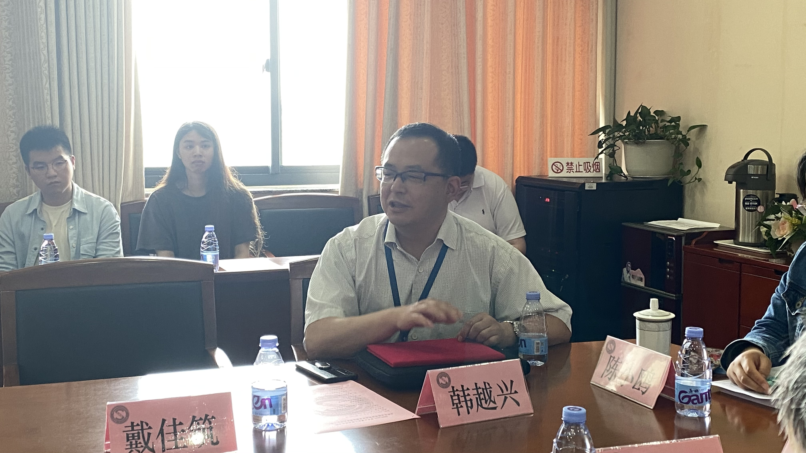 |
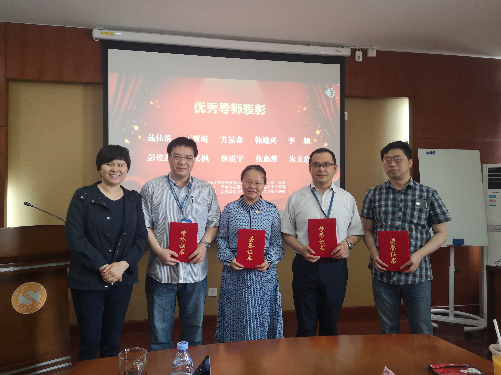 |
|

|
| 2020.12.31 |
征途漫漫，惟有奋斗！祝大家新年快乐，2021年勇往直前，再创佳绩！ |
| 回望过去一年，韩越兴研究组科研攻坚再取佳绩，硕果累累，基金项目获批数和高质量论文录用数量均创新高，研究组始终以服务国家为导向，紧跟热点前沿，勇攀学术高峰，这离不开研究组每位成员的努力，离不开学校学院的大力支持；未来路漫漫，研究组将继续不畏艰险，勇拓学术新地，每位成员也会携手同行，共攀科研高峰，艰难方显勇毅，磨砺始得玉成！ |
| 2020.12.26 |
马柯参加上海材料基因组工程研究院2020学术年会 |
基于机器学习构建镁合金晶粒几何特征与屈服强度关系
Hall-Petch关系给出了多晶材料晶粒尺寸与屈服强度的定量描述。然而晶粒尺寸的统计方法众多，例如截距法、匹配法和网格法，且晶粒等效圆直径和晶粒周长等均可以表示晶粒尺寸这一概念。探究与多晶材料屈服强度相关度最高的晶粒几何特征需要进行图像与大数据处理。本研究结合了图像处理与机器学习，构建锁合金晶粒几何特征与屈服强度关系。
|

|
| 2020.9.23 |
欢迎2020届新生王璐、李睿祺、刘宇虹、夏锦桦入组！ |
 |
王璐，女，本科就读于山西大同大学——数学与应用数学专业，硕士就读于云南昆明理工大学——动力系统及其计算专业，硕士期间的研究方向是数字图像处理——图像去噪，现就读于上海大学计算机科学与技术博士研究生，研究方向是材料图像识别。性格方面，外向活泼，积极乐观，勇于探索。平时喜欢摄影，读书，美食。“积一时之跬步，臻千里之遥程”，我希望在上海大学的四年里，成为一个更好的自己。 |
| 李睿祺，男，本科就读于上海大学计算机工程与科学学院计算机科学与技术专业，现就读于上海大学计算机科学与技术硕士研究生，善于思考，具备合作精神。研究生学习期间师从韩越兴老师，主要学习研究方向为材料图像、小样本学习等。欢迎并期盼与诸位老师、同学、同行一同探索各种计算机技术及信息，互相交流不断进步。 |
 |
 |
刘宇虹，本科就读于安徽中医药大学计算机科学与技术专业，现在是上海大学计算机科学与技术硕士研究生。性格开朗、积极热情、热爱生活。喜欢听音乐、读书、朗诵，推理悬疑剧作、说唱音乐、诗词历史爱好者，也爱看美食、考古、历史记录片。音乐和文字总能在困难迷茫时给予我力量，从诗词和历史中能更好从过去感知未来。常用来激励自己的一句话是：Not a coder,but a thinker,希望能在生活中汲取营养，期盼在上海大学的这段时光成为人生中一段美好的回忆。 |
| 夏锦桦，本科来自江苏科技大学，就读软件工程专业，现在是电子信息专硕的20届研究生。性格方面，我比较开朗、思维活跃，勇于尝试，积极创新，务实肯干，易于沟通，具有较好团队的意识。爱好方面，喜欢运动，打篮球。平时也会看一些动漫。在本科期间的校园生活中，团结同学，积极参加集体的各项活动，有团队合作精神，并曾多次与同学合作完成各种设计与实习作业等， 在其他方面，如体育，曾参加校运会；曾参加学院篮球赛，本人同时也有发展自己多方面的兴趣，为更好发展自身各方面的素质，丰富自己的其他经验。有很强的韧性，做事目标很明确，并且把目标放在首位，能正确的认识自己的优点和不足。遇到挫折有韧性，敢于面对现实继续超越自我。遇事不慌张，能分析其原因和形势找出相应的对策。虽然缺少实践能力和经验，但我会努力提升自己。 |
 |
|
有时离别是为了更好地相聚，离开是为了带最好的自己回来。
|
| 2020.7.7 |
祝贺曾人备、范郭祥、傅宇豪、李睿祺、刘梦炀、卫爱嘉本科顺利毕业!祝愿他们在前行的道路上，不畏艰险、披荆斩棘，用双手创造属于自己的光辉人生! |
| 2020.7.1 |
恭喜宋磊磊顺利毕业!! 天道酬勤。人世间没有不经过勤劳而成为天才的。愿你日夜勤奋，早日成才！ |
|
| |
研究生期间工作：
为了分析和解决典型的材料小样本问题，分别对三种材料小样本数据进行处理和分析，并利用机器学习、深度学习以及复杂网络等相关理论知识有针对性地解决材料小样本问题。
1.针对晶体结构的数据，提出了一种基于机器学习的晶体结构识别方法，该方法通过对样本数据进行扩增，然后根据原子在空间中的分布特点定义特征表示以及特征选择，最后利用机器学习实现对晶体结构的识别。
2.针对AFM图像数据，提出一种基于迁移学习的识别方法，该方法通过预处理实现图像去噪，然后改进分水岭分割方法实现对重叠目标的分割，最后利用迁移学习实现对目标物体的识别。
3.针对陶瓷的微观结构图像数据，提出了一种基于复杂网络理论的图像分割方法，该方法根据图像的像素值分布来生成网络空间的节点集，然后定义节点之间的相似性并生成网络拓扑结构，最后实现网络拓扑结构的优化以及图像分割。 |

|
|
|
|
|
|
|
|
|
| | | | | | | | | | | | | | | | | | | | | | |
 English |
English |
 中文 |
访客量：
中文 |
访客量：


 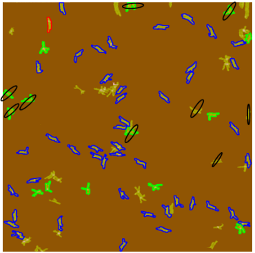
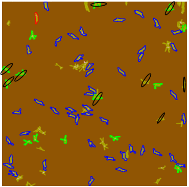